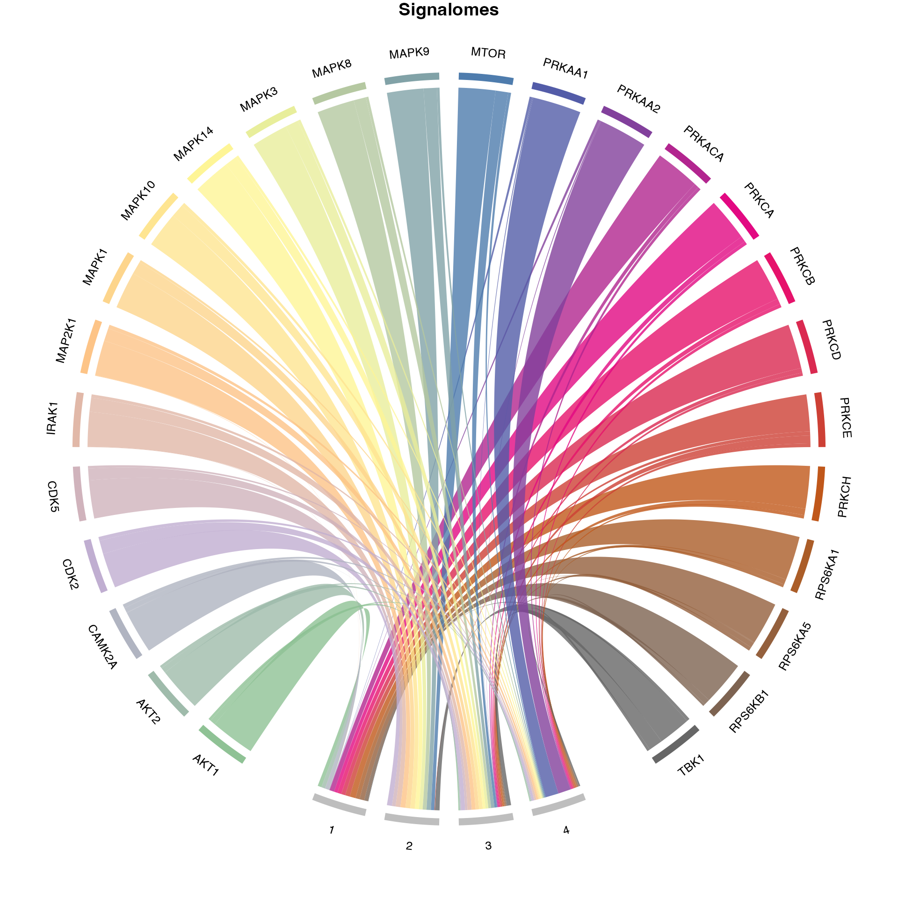

Signalome construction with PhosR
16 September 2021
signalomes.RmdIntroduction
A key component of the PhosR package is to construct signalomes. The signalome construction is composed of two main steps: 1) kinase-substrate relationsip scoring and 2) signalome construction. This involves a sequential workflow where the outputs of the first step are used as inputs of the latter step.
In brief, our kinase-substrate relationship scoring method (kinaseSubstrateScore and kinaseSubstratePred) prioritises potential kinases that could be responsible for the phosphorylation change of phosphosite on the basis of kinase recognition motif and phosphoproteomic dynamics. Using the kinase-substrate relationships derived from the scoring methods, we reconstruct signalome networks present in the data (Signalomes) wherin we highlight kinase regulation of discrete modules.
Loading packages and data
First, we will load the PhosR package along with few other packages that we will be using in this section of the vignette.
suppressPackageStartupMessages({
library(PhosR)
library(dplyr)
library(ggplot2)
library(GGally)
library(ggpubr)
library(calibrate)
library(network)
})We will also be needing data containing kinase-substrate annotations from PhosphoSitePlus, kinase recognition motifs from kinase motifs, and annotations of kinase families from kinase family.
Setting up the data
As before, we will set up the data by cleaning up the phoshophosite labels and performing RUV normalisation. We will generate the ppe_RUV matrix as in batch_correction.
data("phospho_L6_ratio_pe")
data("SPSs")
##### Run batch correction
ppe <- phospho.L6.ratio.pe
sites = paste(sapply(ppe@GeneSymbol, function(x)x),";",
sapply(ppe@Residue, function(x)x),
sapply(ppe@Site, function(x)x),
";", sep = "")
grps = gsub("_.+", "", colnames(ppe))
design = model.matrix(~ grps - 1)
ctl = which(sites %in% SPSs)
ppe = RUVphospho(ppe, M = design, k = 3, ctl = ctl)
phosphoL6 = ppe@assays@data$normalisedGeneration of kinase-substrate relationship scores
Next, we will filtered for dynamically regulated phosphosites and then standardise the filtered matrix.
# filter for up-regulated phosphosites
phosphoL6.mean <- meanAbundance(phosphoL6, grps = gsub("_.+", "", colnames(phosphoL6)))
aov <- matANOVA(mat=phosphoL6, grps=gsub("_.+", "", colnames(phosphoL6)))
idx <- (aov < 0.05) & (rowSums(phosphoL6.mean > 0.5) > 0)
phosphoL6.reg <- phosphoL6[idx, ,drop = FALSE]
L6.phos.std <- standardise(phosphoL6.reg)
rownames(L6.phos.std) <- paste0(ppe@GeneSymbol, ";", ppe@Residue, ppe@Site, ";")[idx]We next extract the kinase recognition motifs from each phosphosite.
L6.phos.seq <- ppe@Sequence[idx]Now that we have all the inputs for kinaseSubstrateScore and kinaseSubstratePred ready, we can proceed to the generation of kinase-substrate relationship scores.
L6.matrices <- kinaseSubstrateScore(substrate.list = PhosphoSite.mouse,
mat = L6.phos.std, seqs = L6.phos.seq,
numMotif = 5, numSub = 1, verbose = FALSE)
set.seed(1)
L6.predMat <- kinaseSubstratePred(L6.matrices, top=30, verbose = FALSE) Signalome construction
The signalome construction uses the outputs of kinaseSubstrateScore and kinaseSubstratePred functions for the generation of a visualisation of the kinase regulation of discrete regulatory protein modules present in our phosphoproteomic data.
kinaseOI = c("PRKAA1", "AKT1")
Signalomes_results <- Signalomes(KSR=L6.matrices,
predMatrix=L6.predMat,
exprsMat=L6.phos.std,
KOI=kinaseOI)
Generate signalome map
We can also visualise the relative contribution of each kinase towards the regulation of protein modules by plotting a balloon plot. In the balloon plot, the size of the balloons denote the percentage magnitude of kinase regulation in each module.
### generate palette
my_color_palette <- grDevices::colorRampPalette(RColorBrewer::brewer.pal(8, "Accent"))
kinase_all_color <- my_color_palette(ncol(L6.matrices$combinedScoreMatrix))
names(kinase_all_color) <- colnames(L6.matrices$combinedScoreMatrix)
kinase_signalome_color <- kinase_all_color[colnames(L6.predMat)]
plotSignalomeMap(signalomes = Signalomes_results, color = kinase_signalome_color)
Generate signalome network
Finally, we can also plot the signalome network that illustrates the connectivity between kinase signalome networks.
plotKinaseNetwork(KSR = L6.matrices, predMatrix = L6.predMat, threshold = 0.9, color = kinase_all_color)SessionInfo
sessionInfo()
#> R version 4.1.1 (2021-08-10)
#> Platform: x86_64-apple-darwin17.0 (64-bit)
#> Running under: macOS Catalina 10.15.7
#>
#> Matrix products: default
#> BLAS: /Library/Frameworks/R.framework/Versions/4.1/Resources/lib/libRblas.0.dylib
#> LAPACK: /Library/Frameworks/R.framework/Versions/4.1/Resources/lib/libRlapack.dylib
#>
#> locale:
#> [1] en_US.UTF-8/en_US.UTF-8/en_US.UTF-8/C/en_US.UTF-8/en_US.UTF-8
#>
#> attached base packages:
#> [1] stats graphics grDevices utils datasets methods base
#>
#> other attached packages:
#> [1] network_1.17.1 calibrate_1.7.7 MASS_7.3-54 ggpubr_0.4.0
#> [5] GGally_2.1.2 ggplot2_3.3.5 dplyr_1.0.7 PhosR_1.1.8
#>
#> loaded via a namespace (and not attached):
#> [1] colorspace_2.0-2 ggsignif_0.6.3
#> [3] ellipsis_0.3.2 class_7.3-19
#> [5] rio_0.5.27 rprojroot_2.0.2
#> [7] circlize_0.4.13 XVector_0.32.0
#> [9] GenomicRanges_1.44.0 GlobalOptions_0.1.2
#> [11] ggdendro_0.1.22 fs_1.5.0
#> [13] proxy_0.4-26 farver_2.1.0
#> [15] fansi_0.5.0 cachem_1.0.6
#> [17] knitr_1.34 broom_0.7.9
#> [19] pheatmap_1.0.12 BiocManager_1.30.16
#> [21] compiler_4.1.1 backports_1.2.1
#> [23] Matrix_1.3-4 fastmap_1.1.0
#> [25] limma_3.48.3 htmltools_0.5.2
#> [27] tools_4.1.1 igraph_1.2.6
#> [29] coda_0.19-4 gtable_0.3.0
#> [31] glue_1.4.2 GenomeInfoDbData_1.2.6
#> [33] reshape2_1.4.4 Rcpp_1.0.7
#> [35] carData_3.0-4 Biobase_2.52.0
#> [37] cellranger_1.1.0 statnet.common_4.5.0
#> [39] pkgdown_1.6.1 vctrs_0.3.8
#> [41] preprocessCore_1.54.0 xfun_0.26
#> [43] stringr_1.4.0 openxlsx_4.2.4
#> [45] lifecycle_1.0.0 rstatix_0.7.0
#> [47] dendextend_1.15.1 zlibbioc_1.38.0
#> [49] scales_1.1.1 BiocStyle_2.20.2
#> [51] ragg_1.1.3 pcaMethods_1.84.0
#> [53] hms_1.1.0 MatrixGenerics_1.4.3
#> [55] parallel_4.1.1 SummarizedExperiment_1.22.0
#> [57] RColorBrewer_1.1-2 yaml_2.2.1
#> [59] curl_4.3.2 memoise_2.0.0
#> [61] gridExtra_2.3 reshape_0.8.8
#> [63] stringi_1.7.4 highr_0.9
#> [65] S4Vectors_0.30.0 desc_1.3.0
#> [67] e1071_1.7-8 BiocGenerics_0.38.0
#> [69] zip_2.2.0 shape_1.4.6
#> [71] GenomeInfoDb_1.28.4 rlang_0.4.11
#> [73] pkgconfig_2.0.3 systemfonts_1.0.2
#> [75] matrixStats_0.60.1 bitops_1.0-7
#> [77] evaluate_0.14 lattice_0.20-44
#> [79] purrr_0.3.4 ruv_0.9.7.1
#> [81] labeling_0.4.2 tidyselect_1.1.1
#> [83] plyr_1.8.6 magrittr_2.0.1
#> [85] R6_2.5.1 IRanges_2.26.0
#> [87] generics_0.1.0 DelayedArray_0.18.0
#> [89] pillar_1.6.2 haven_2.4.3
#> [91] foreign_0.8-81 withr_2.4.2
#> [93] abind_1.4-5 RCurl_1.98-1.4
#> [95] tibble_3.1.4 crayon_1.4.1
#> [97] car_3.0-11 utf8_1.2.2
#> [99] rmarkdown_2.11 viridis_0.6.1
#> [101] grid_4.1.1 readxl_1.3.1
#> [103] data.table_1.14.0 forcats_0.5.1
#> [105] digest_0.6.27 tidyr_1.1.3
#> [107] textshaping_0.3.5 stats4_4.1.1
#> [109] munsell_0.5.0 viridisLite_0.4.0